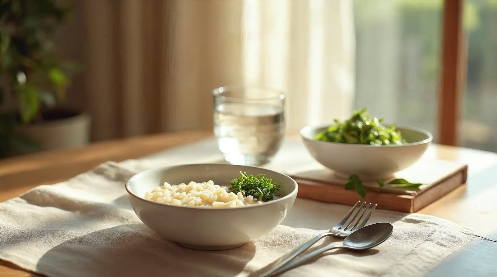
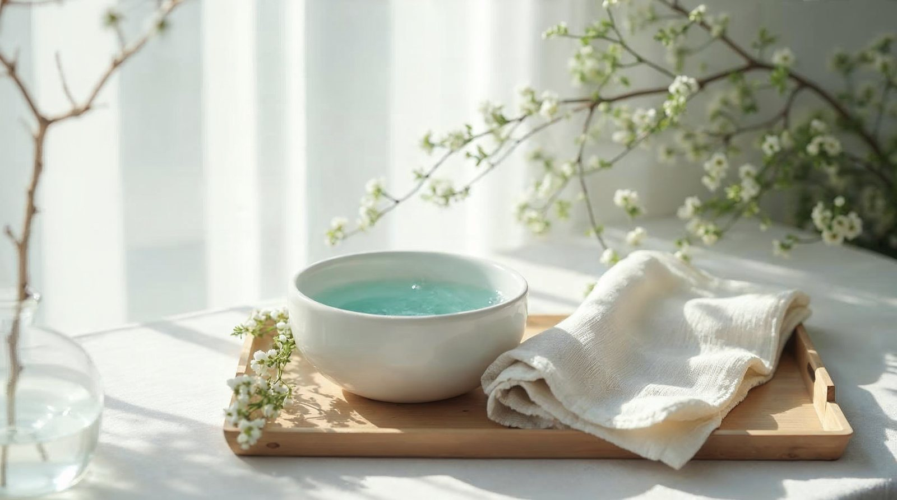
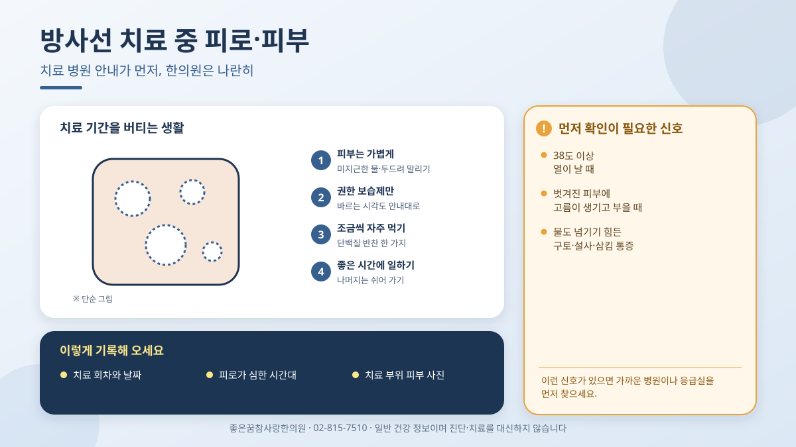

이종호 한의사 감수좋은꿈참사랑한의원 대표원장 (한의사 면허번호 19769)발행 2026-11-26 · 수정 2026-11-26
이 글의 차례
매일 같은 시각, 같은 병원으로 향합니다. 치료실에 누워 있는 시간은 몇 분 남짓인데, 오가는 길과 기다리는 시간까지 합치면 하루의 절반이 지나갑니다. 처음 한두 주는 생각보다 괜찮다 싶었는데, 셋째 주쯤부터 몸이 무겁고 오후만 되면 눕고 싶어집니다. 치료 부위 피부도 햇볕에 그을린 것처럼 붉어지고 따끔거리기 시작합니다.
진료실에서 방사선 치료를 받고 계신 분이나 가족분들이 조심스럽게 여쭤보시는 이야기입니다. 치료는 잘 받고 싶은데 하루하루 버티기가 쉽지 않다고 하십니다. 이런 피로와 피부 변화가 원래 있는 것인지, 무엇을 더 챙겨야 하는지 막막하다는 말씀도 함께 듣습니다.
방사선 치료 중의 피로와 피부 변화는 많은 분이 겪는 흔한 변화입니다. 그렇다고 그냥 참고 넘겨야 하는 것은 아닙니다. 치료 병원 의료진과 상의하며 집에서 챙길 수 있는 것들이 있고, 한의원에서도 치료 병원과 나란히 살펴 드릴 수 있는 부분이 있습니다.
이 글에서는 방사선 치료 중 피로와 피부 변화가 왜 생기는지, 치료 병원과 먼저 상의할 점은 무엇인지, 집에서 챙길 수 있는 관리와 한의원에서 함께 살필 수 있는 부분을 차례로 말씀드리겠습니다.
방사선 치료는 몸에서 어떤 일을 하나요?
방사선 치료는 높은 에너지의 빛을 치료 부위에 정밀하게 쪼여 암세포가 자라는 것을 막는 치료입니다. 보통 몇 주에 걸쳐 평일마다 조금씩 나누어 받습니다. 한 번에 받는 양을 나누는 것은 정상 조직이 회복할 시간을 주기 위해서입니다.
치료 자체는 아프지 않고 몇 분이면 끝나지만, 몸은 매일 회복하는 데 힘을 씁니다. 치료 부위의 정상 세포도 조금씩 영향을 받아 회복 과정을 거치게 되는데, 이 과정이 피부 변화와 피로로 드러납니다.
치료 부위에 따라 나타나는 변화도 다릅니다. 머리와 목 쪽이라면 입안이 헐고 삼키기 불편할 수 있고, 가슴 쪽이라면 기침이나 삼킬 때 불편함이, 배와 골반 쪽이라면 설사나 소변 불편이 함께 나타날 수 있습니다.
왜 치료가 이어질수록 피로가 쌓일까요
방사선 치료 중의 피로는 치료가 진행될수록 조금씩 쌓이는 경우가 많습니다. 몸이 매일 손상된 조직을 회복하느라 에너지를 쓰기 때문입니다. 치료 초반보다 중반 이후에 더 피곤하다고 느끼시는 것은 이런 이유입니다.
매일 병원을 오가는 일도 피로를 더합니다. 이동 시간, 대기 시간, 치료에 대한 긴장이 매일 반복되면 몸과 마음이 함께 지칩니다. 여기에 입맛이 떨어져 식사량이 줄고 잠이 얕아지면 피로는 더 깊어집니다.
빈혈이나 갑상선 기능 변화, 함께 받는 항암 치료처럼 피로를 키우는 다른 이유가 있을 수도 있습니다. 피로가 갑자기 심해지거나 숨이 차는 느낌이 함께 있다면 치료 병원에 알리고 확인을 받으시는 것이 좋습니다.
치료 부위 피부는 어떻게 변하나요?
치료를 시작하고 2~3주쯤 지나면 치료 부위 피부가 붉어지고 건조해지며 가렵거나 따끔거리기 시작하는 경우가 많습니다. 햇볕에 그을린 것처럼 보이기도 하고, 피부색이 조금 짙어지기도 합니다.
치료가 더 이어지면 피부가 벗겨지거나, 겨드랑이나 가슴 아래처럼 접히는 곳에 진물이 나기도 합니다. 이런 변화는 치료가 끝난 뒤 몇 주에 걸쳐 서서히 가라앉는 경우가 많지만, 그 사이 피부를 잘 보살피는 것이 중요합니다.
피부 변화의 정도는 치료 부위, 치료 횟수, 피부의 성질에 따라 사람마다 다릅니다. 그래서 피부 관리 방법은 치료 병원에서 안내받은 내용을 가장 먼저 따르시는 것이 좋습니다.
피부를 보살필 때 기억할 것
치료 부위 피부는 평소보다 훨씬 예민해져 있습니다. 문지르거나 긁지 말고, 미지근한 물로 가볍게 씻은 뒤 부드러운 수건으로 두드려 말리세요. 뜨거운 물, 때 밀기, 사우나는 피하시는 것이 좋습니다.
- 치료 병원에서 권한 보습제만 바르기
- 향이 강한 화장품, 파스, 데오도란트는 상의 후 쓰기
- 꽉 끼는 속옷보다 부드러운 면 옷 입기
- 치료 부위에 찜질팩이나 얼음주머니 대지 않기
- 바깥에 나갈 때 치료 부위가 햇볕에 닿지 않게 가리기
- 치료 부위 표시선은 지우지 않기
보습제나 연고는 치료 직전에 바르면 안 되는 경우도 있어, 바르는 시각도 치료 병원 안내를 따르세요. 피부가 벗겨지거나 진물이 나면 집에서 해결하려 하지 마시고 치료 병원에 바로 알려 주세요.
피로를 나눠서 쓰는 법
피로가 쌓일 때는 에너지를 아껴 쓰는 지혜가 필요합니다. 하루 중 컨디션이 가장 좋은 시간대를 찾아 꼭 필요한 일을 그때 하시고, 나머지 시간은 쉬어 가는 방식입니다.
집안일은 가족과 나누고, 장보기는 배달을 이용하시는 것도 좋습니다. 도움을 청하는 것이 미안하게 느껴지실 수 있지만, 치료 기간에는 회복에 힘을 모으는 것이 가장 중요한 일입니다.
쉬는 것만큼 가볍게 움직이는 것도 피로를 덜어 줍니다. 컨디션이 괜찮은 날에는 집 근처를 10~20분 천천히 걸어 보세요. 몸을 조금 움직인 날 오히려 덜 피곤하다고 느끼시는 분이 많습니다. 다만 숨이 차거나 어지러우면 바로 쉬셔야 합니다.

식사와 물은 어떻게 챙기나요?
치료 중에는 입맛이 떨어지기 쉽지만, 회복에는 충분한 영양이 필요합니다. 한 번에 많이 드시기 어렵다면 하루 다섯 번, 여섯 번으로 나누어 조금씩 드세요. 단백질이 들어간 반찬을 한 가지씩 챙기시면 좋습니다.
물은 조금씩 자주 드시는 것이 좋습니다. 배나 골반 쪽 치료로 설사가 있다면 물 섭취가 더 중요해집니다. 치료 부위에 따라 피해야 할 음식이 따로 있을 수 있으니, 식사 안내는 치료 병원 영양 상담을 먼저 따르세요.
건강식품이나 즙, 영양제를 새로 드시기 전에는 치료 병원 의료진과 먼저 상의하세요. 좋다고 알려진 것이라도 치료 중에는 맞지 않을 수 있습니다.
잠과 마음은 어떻게 돌보나요?
치료 기간에는 걱정과 긴장으로 잠이 얕아지기 쉽습니다. 낮에 피곤해서 오래 누워 있다 보면 밤에 잠이 오지 않는 일도 생깁니다. 낮잠은 오후 이른 시각에 30분 안쪽으로 하시고, 잠드는 시각과 일어나는 시각을 일정하게 맞춰 보세요.
마음이 불안하고 가라앉는 것도 자연스러운 일입니다. 치료 병원에는 대개 상담을 도와주는 곳이 있으니 필요하면 이용해 보세요. 가족이나 가까운 사람에게 지금의 마음을 이야기하는 것만으로도 짐이 조금 가벼워집니다.
치료 부위에 따라 더 챙길 것
머리와 목 쪽 치료를 받으신다면 입안 관리가 중요합니다. 부드러운 칫솔을 쓰고, 치료 병원에서 권한 가글로 자주 헹구세요. 맵고 짜고 뜨거운 음식, 딱딱한 음식은 입안을 더 자극하니 미지근하고 부드러운 음식을 고르시면 좋습니다.
가슴 쪽 치료라면 삼킬 때 걸리는 느낌이나 마른기침이 생길 수 있습니다. 음식을 잘게 썰어 천천히 드시고, 물을 곁들이세요. 배와 골반 쪽 치료라면 장이 예민해질 수 있어 기름진 음식과 찬 음식, 날음식은 줄이시는 편이 좋습니다.
어느 부위든 새로 생긴 불편은 참지 마시고 다음 치료 때 의료진께 말씀해 주세요. 미리 알리면 조절할 방법을 함께 찾을 수 있습니다.
가족이 도울 수 있는 것
치료를 받는 분은 매일 병원을 오가는 것만으로도 힘이 많이 듭니다. 가족이 병원 동행을 나누어 맡거나, 식사를 미리 준비해 두거나, 집안일을 덜어 드리는 것이 큰 도움이 됩니다.
무엇보다 "힘들면 쉬어도 괜찮아요"라는 한마디가 중요합니다. 치료 중인 분은 가족에게 짐이 될까 봐 힘든 내색을 하지 않으시는 경우가 많습니다. 먼저 안부를 묻고, 쉬는 것을 편하게 여기도록 곁에서 거들어 주세요.
치료가 끝난 뒤의 회복기
마지막 치료를 마치면 큰 산을 넘었다는 안도감이 듭니다. 그런데 피부 변화는 치료가 끝난 뒤 1~2주 동안 오히려 조금 더 심해졌다가 가라앉는 경우가 있어 놀라시는 분이 많습니다. 이 시기에도 치료 중과 같은 방식으로 피부를 보살펴 주세요.
치료가 끝난 부위의 피부는 한동안 햇볕에 예민할 수 있습니다. 바깥에 나갈 때는 옷으로 가리고, 일상으로 돌아가는 속도는 몸의 반응을 보며 천천히 늘려 가시길 권합니다. 정기 검진 일정도 잊지 말고 챙기세요.
먼저 이렇게 여쭙니다
처음 오시면 대략 이런 순서로 여쭙니다. 미리 정리해 오시면 이야기가 수월해집니다.
- 치료받는 병원과 진단명, 방사선 치료 부위와 남은 횟수는 어떻게 되나요?
- 함께 받고 계신 항암 치료나 호르몬 치료가 있나요?
- 피로가 가장 심한 시간대와 하루 활동량은 어떠신가요?
- 치료 부위 피부에 어떤 변화가 있고, 병원에서 어떤 안내를 받으셨나요?
- 입맛과 식사량, 몸무게는 어떻게 달라지셨나요?
- 드시는 약과 영양제는 무엇인가요?
치료 일정표나 병원 안내문, 약 봉투를 가져와 주시면 이야기를 정확하게 이어 갈 수 있습니다. 기억나지 않는 부분은 가족께 여쭤 오셔도 되고, 진료실에서 함께 하나씩 정리해 가도 괜찮습니다.
일상에서 먼저 해 볼 수 있는 것
- 하루 중 컨디션이 좋은 시간에 중요한 일 몰아 하기
- 식사는 조금씩 자주, 단백질 반찬 한 가지씩 챙기기
- 물병을 곁에 두고 조금씩 자주 마시기
- 컨디션이 괜찮은 날 10~20분 가볍게 걷기
- 치료 부위는 미지근한 물로 가볍게 씻고 두드려 말리기
- 잠드는 시각과 일어나는 시각 일정하게 맞추기
모든 것을 다 하려 하지 마시고, 오늘 할 수 있는 것 하나만 골라 보세요. 치료 기간에는 잘 버티는 것 자체가 이미 큰일을 해내고 계신 것입니다.
치료 일정이 바뀌거나 컨디션이 크게 달라진 날에는 계획을 내려놓고 쉬셔도 괜찮습니다. 쉬는 날이 있어야 다음 날 다시 병원에 갈 힘이 생깁니다. 스스로에게 너그러운 마음을 가져 주세요.

한의원에서 함께 살필 수 있는 경우
- 치료가 이어지며 피로가 쌓이고 기운이 많이 떨어진 경우
- 입맛이 없고 소화가 더디며 속이 메스꺼운 경우
- 잠이 얕고 걱정으로 자주 깨는 경우
- 치료 부위가 아닌 목, 어깨, 허리가 굳고 아픈 경우
- 손발이 차고 몸이 쉽게 붓는 경우
좋은꿈참사랑한의원에서는 치료 병원의 치료를 대신하지 않고 나란히 갑니다. 맥을 짚고 잠, 소화, 대소변, 손발 온도를 여쭌 뒤 치료 부위를 피해 몸의 긴장을 살피고, 침과 온열 관리 가운데 지금 상태에 맞는 것을 함께 정합니다.
한약을 상의할 때는 드시는 약과 치료 일정을 모두 확인하고, 치료 병원 의료진과 먼저 상의하신 뒤 신중하게 정합니다. 치료 병원에서 받은 약은 상의 없이 멈추지 않으시도록 안내합니다.
이렇게 기록해 오시면 상담이 쉬워집니다
치료 기간 동안 간단히 적어 두시면 치료 병원과 한의원 모두에서 상담이 쉬워집니다.
- 치료 회차와 날짜
- 피로가 심했던 시간대와 정도
- 치료 부위 피부의 변화(붉어짐, 가려움, 벗겨짐)
- 식사량과 몸무게, 물 마신 양
- 잠든 시각과 깬 시각, 밤에 깬 횟수
치료 부위 피부는 날마다 같은 조명에서 사진을 찍어 두시면 변화를 비교하기 쉽습니다. 이 기록은 치료 병원 진료 때 함께 보여 드리시면 좋습니다.
치료를 끝까지 마치기 위해
방사선 치료 중의 피로와 피부 변화는 몸이 치료를 견디며 회복하고 있다는 흔적이기도 합니다. 치료가 끝난 뒤에도 피로가 몇 주에서 몇 달 이어질 수 있으니, 서두르지 마시고 천천히 일상을 되찾아 가시면 됩니다.
오늘은 치료 부위를 미지근한 물로 가볍게 씻고, 물 한 잔을 더 드시는 것부터 시작해 보세요. 그다음 걸음은 치료 병원, 그리고 한의원과 함께 천천히 정해 가겠습니다.
이런 증상은 먼저 확인이 필요합니다
- 38도 이상의 열이 나거나 치료 부위 피부가 벗겨진 자리에 고름이 생기고 붓는 경우
- 숨이 많이 차거나 물도 넘기기 어려울 만큼 구토, 설사, 삼킴 통증이 심한 경우
이런 신호가 있으면 한의원보다 가까운 병원이나 응급실을 먼저 찾으세요.
함께 읽으면 좋은 글
- 항암 치료 중이거나 마친 뒤 일상의 기운·입맛·잠을 한의원과 상의하고 싶을 때는 어떻게 하나요?
- 항암 치료 뒤 손발이 저리고 감각이 둔해지는 말초신경병증은 어떻게 살피나요?
- 암 치료로 호르몬 치료를 받으며 열감·땀·잠 문제처럼 갱년기 같은 증상이 생길 때는 어떻게 살피나요?
- 유방암 수술 뒤 어깨와 팔이 굳고 팔이 붓는 림프부종이 걱정될 때는 어떻게 살피나요?
- 충분히 쉬어도 몸이 늘 피곤한 만성피로는 어떤 점을 살펴보나요?

여쭙는 것
- 치료받는 병원과 진단명, 방사선 치료 부위와 남은 횟수는 어떻게 되나요?
- 함께 받고 계신 항암 치료나 호르몬 치료가 있나요?
- 피로가 가장 심한 시간대와 하루 활동량은 어떠신가요?
생활에서 해 볼 것
- 하루 중 컨디션이 좋은 시간에 중요한 일 몰아 하기
- 식사는 조금씩 자주, 단백질 반찬 한 가지씩 챙기기
- 물병을 곁에 두고 조금씩 자주 마시기
한의원에서 함께 살필 것
- 치료가 이어지며 피로가 쌓이고 기운이 많이 떨어진 경우
- 입맛이 없고 소화가 더디며 속이 메스꺼운 경우
- 잠이 얕고 걱정으로 자주 깨는 경우
먼저 확인이 필요한 신호
- 38도 이상의 열이 나거나 치료 부위 피부가 벗겨진 자리에 고름이 생기고 붓는 경우
- 숨이 많이 차거나 물도 넘기기 어려울 만큼 구토, 설사, 삼킴 통증이 심한 경우
한눈에 보는 표
| 구분 | 핵심 |
|---|---|
| 여쭙는 것 | 치료받는 병원과 진단명, 방사선 치료 부위와 남은 횟수는 어떻게 되나요? 함께 받고 계신 항암 치료나 호르몬 치료가 있나요? |
| 생활에서 해 볼 것 | 하루 중 컨디션이 좋은 시간에 중요한 일 몰아 하기 식사는 조금씩 자주, 단백질 반찬 한 가지씩 챙기기 |
| 한의원에서 함께 살필 것 | 치료가 이어지며 피로가 쌓이고 기운이 많이 떨어진 경우 입맛이 없고 소화가 더디며 속이 메스꺼운 경우 |
| 먼저 확인이 필요한 신호 | 38도 이상의 열이 나거나 치료 부위 피부가 벗겨진 자리에 고름이 생기고 붓는 경우 숨이 많이 차거나 물도 넘기기 어려울 만큼 구토, 설사, 삼킴 통증이 심한 경우 |
자주 묻는 질문
방사선 치료 중에 한의원 진료를 받아도 되나요?
치료 병원의 치료를 대신하지 않고 나란히 가는 진료라면 상의해 볼 수 있습니다. 치료 부위는 피해서 살피고, 한약은 치료 병원 의료진과 먼저 상의하신 뒤 신중하게 정합니다.
치료 부위 피부에 알로에나 오일을 발라도 되나요?
집에 있는 제품을 임의로 바르기보다 치료 병원에서 권한 보습제를 쓰시는 것이 좋습니다. 바르는 시각도 치료 직전을 피해야 할 수 있어 안내를 따르세요.
치료 중에 운동을 해도 되나요?
컨디션이 괜찮은 날 10~20분 천천히 걷는 정도는 피로를 덜어 주는 데 도움이 될 수 있습니다. 숨이 차거나 어지러우면 바로 쉬시고, 운동 범위는 치료 병원과 상의하세요.
치료가 끝나면 피로도 바로 없어지나요?
치료가 끝난 뒤에도 몇 주에서 몇 달 피로가 이어질 수 있습니다. 서두르지 말고 활동량을 천천히 늘려 가시고, 피로가 오래가면 치료 병원과 상의하세요.
가족이 대신 와서 상담받을 수 있나요?
가족이 치료 일정과 몸 상태를 정리해 오시면 큰 도움이 됩니다. 다만 진맥과 진찰은 본인을 직접 뵈어야 할 수 있어, 컨디션이 괜찮은 날 함께 오시길 권합니다.
좋은꿈참사랑한의원은 재진 때 지난번 이야기부터 이어서 여쭙니다. 진료시간과 예약은 오시는 길에서 확인하세요.
어디서 상담받을 수 있나요?
좋은꿈참사랑한의원은 서울 동작구 만양로2길 2 신성빌딩 3층·5층(서울 동작구 상도동, 7호선 상도역 3번 출구 근처)에 있습니다. 한의사 3명(이종호 대표원장, 조영기 수석진료원장, 정원영 진료원장)이 진료합니다. 진료시간은 평일 09:30~20:00(점심 13:00~14:00), 토·일·공휴일 09:30~15:00이며, 방문 전 전화로 확인을 권합니다. 예약은 네이버 예약, 카카오톡 상담, 전화 02-815-7510로 받습니다.
이 글은 일반적인 건강 정보이며 개인의 진단이나 치료를 대신하지 않습니다. 증상이 있거나 복용 중인 약이 있다면 진료를 통해 확인하세요. 치료 효과는 개인마다 다를 수 있습니다.
작성 기준: 일반적으로 알려져 있는 건강 정보를 참고해 정리했습니다(대표원장 감수). 증상 기록은 1~2주 동안 하루 1회, 비슷한 시간에 적어 오시면 지난 상태와 비교하기 쉽습니다.